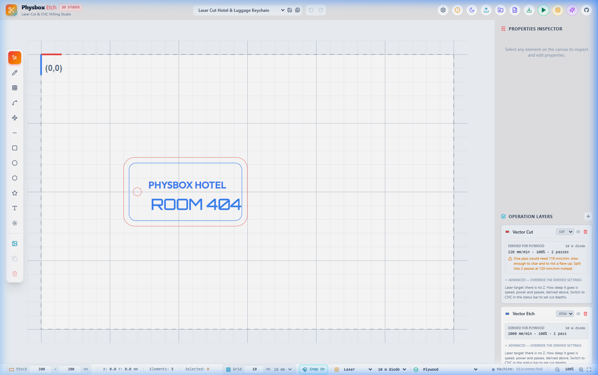
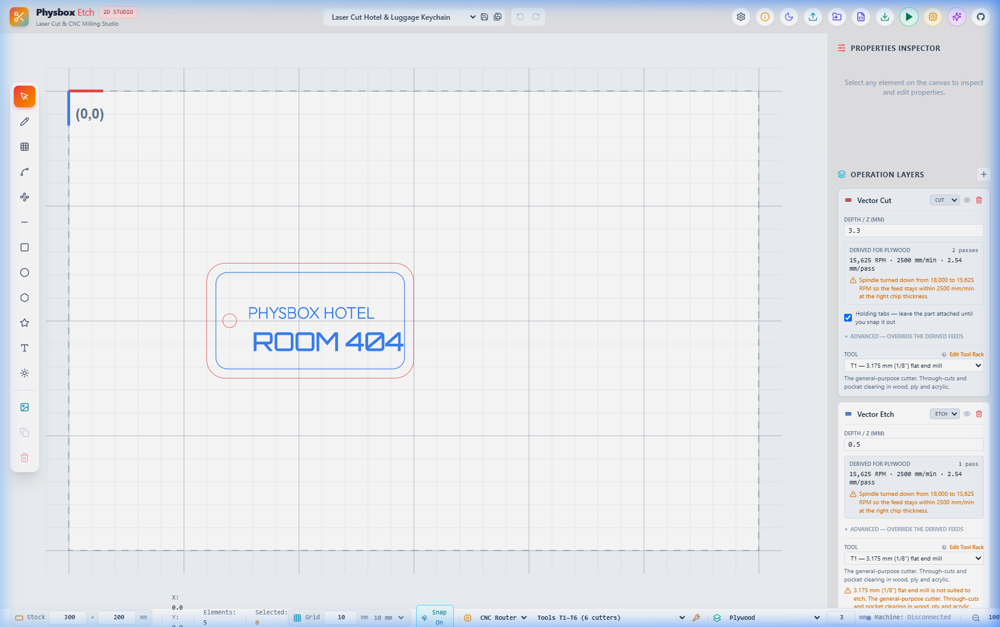
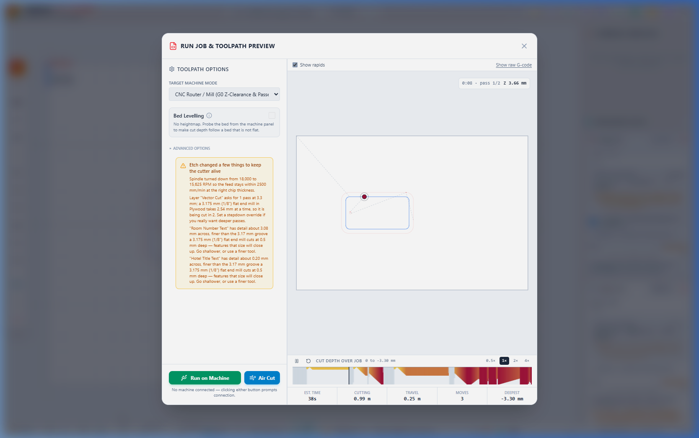

A Beginner's Guide To CNC with PhysBox Etch
Or: How to cut physical objects out of wood without setting your workshop on fire or flinging broken carbide end mills across the room.
1. The Subtractive Mindset & Why CNCs Don't Forgive Lies
Welcome to the satisfying, noisy, and occasionally terrifying realm of subtractive manufacturing. If you come from the gentle world of 3D printing, you are accustomed to an additive hotend that patiently squirts molten PLA onto a glass bed. If a 3D printer makes a mistake, it leaves a harmless blob of plastic string.
A CNC router, by contrast, operates with the calm disposition of a hungry angry badger. It spins a hardened tungsten carbide cutter at 18,000 RPM and forces it through solid material. It does not care if that material is 18mm Russian Birch Plywood, anodized aluminum, or your favorite aluminum workpiece hold-down clamp. If your code tells the tool to plunge 20mm deep into solid stock at 5,000 mm/min, it will cheerfully try to do so until either the stepper motor stalls, the bit snaps, or your circuit breaker trips.
In 3D printing, mistakes cost 4 cents of filament. In CNC milling, mistakes cost a $35 end mill, a ruined piece of hardwood, and 45 minutes of picking wooden splinters out of your hair.
PhysBox Etch was designed specifically to bridge vector artwork with real CNC machine control without requiring a degree in mechanical engineering. It gives you a bed-accurate 2D design workspace, automatic derived speeds and feeds, real-time safety warnings, and live GRBL machine control over WebSerial.

2. Grid, Stock & The Coordinates Myth ($H vs G54)
Before touching a cutter, you must understand where your machine thinks it is in 3D space. CNC machines operate on two distinct coordinate systems:
- Machine Coordinates (MPos): Set when you home your machine (
$H) against its physical limit switches. Machine (0,0,0) is usually the back-right corner with the spindle pulled all the way up. - Work Coordinates (WPos / G54): The actual starting point of your physical stock material. This is where your job's (0,0) is located—typically the front-left bottom corner of your workpiece.
If you fail to zero your Work Coordinates (G54) before pressing Run, your machine will use whatever random zero was stored in memory. At best, it cuts thin air 100mm above your board. At worst, it plunges straight through your spoilboard into your aluminum T-track table.
Setting Up Your Bed Bounds in Etch
At the bottom bar of PhysBox Etch, you can set your exact physical stock size (e.g. 300mm x 200mm). The canvas updates immediately, displaying red and blue origin marker arrows at (0,0). Always align your physical stock on the CNC bed so the front-left corner matches the (0,0) origin on the Etch screen.
3. Tooling 101 & The Feeds & Speeds Trap
Choosing the right tool and cutting parameters determines whether your project ends in crisp smooth wooden edges or a smoke-filled room.
Common CNC Milling Cutters
Flat End Mills (3.175mm / 1/8")
The workhorse of CNC routing. Perfect for through-cuts, pockets, and fast material removal in plywood, MDF, and softwoods.
V-Carve Bits (60° / 90°)
Sharpened conical bits designed for fine line engraving, decorative lettering, and bevelled chamfers.
Ball Nose Mills
Rounded tips used for 3D relief carving and smooth curved contours without sharp step marks.
The Spindle Speed Lie
Beginners often assume that turning the spindle to maximum RPM (e.g., 24,000 RPM) while moving the tool slowly is safer. This is false. If your spindle spins rapidly while your feed rate is slow, the teeth of the cutter don't take real chips—they rub against the wood. Rubbing creates friction, friction creates heat, heat turns your sawdust into charcoal, and charcoal turns into fire.
Etch calculates chip load automatically based on cutter diameter and material presets (Plywood, MDF, Acrylic, Hardwood). If you select 18,000 RPM in Plywood, Etch will warn you: "Spindle turned down to 15,625 RPM so feed stays within 2500 mm/min at the right chip thickness."

4. Depths, Passes & The Mandatory Holding Tab Rule
You cannot slice through a 12mm thick hardwood board in a single pass. Attempting to do so will snap your carbide end mill instantly. Subtractive milling relies on stepdown passes—cutting a fraction of the total depth per pass until the entire stock thickness is cleared.
Stepdown Rules of Thumb
- Softwoods & MDF: Max stepdown = 1.0× tool diameter (e.g., 3.175mm depth per pass for a 3.175mm end mill).
- Hardwoods (Oak, Maple, Walnut): Max stepdown = 0.5× tool diameter (e.g., 1.58mm per pass).
- Aluminum & Hard Plastics: Max stepdown = 0.2× tool diameter (e.g., 0.6mm per pass).
When cutting out a shape (like a wooden keychain or box lid), the final pass disconnects the part from the surrounding stock. Without holding tabs, the spinning end mill will grab the loose piece and launch it across your shop like a wooden shrapnel missile. Always check 'Holding tabs' in the Cut layer panel!
5. Touch-Plate Z Zeroing & Bed Heightmaps
Accurate Z zeroing is the difference between a pristine cut and a gouged bed. PhysBox Etch includes direct WebSerial touch-plate probing routines:
- Place your metal touch plate flat on top of your stock material.
- Attach the ground alligator clip to your spindle or cutter shank.
- Open the Run / Machine Control Panel in Etch, enter your touch plate thickness (e.g.
13.00 mm), and click Probe Z Zero. - The machine moves down slowly until contact is established, sends
G38.2, updatesZ0to the top of the board, and retracts safely.
If the alligator clip falls off and the probe never makes contact, Etch detects the missed probe alarm state and refuses to write a fake zero. Older software would assume zero wherever the motor stopped, causing catastrophic crashes on the next command.
Taming Warped Plywood with Bed Heightmaps
Plywood sheets are rarely perfectly flat. If your stock bows up 1.5mm in the center, an etch layer set to 0.5mm depth will cut too deep in the middle and completely miss the edges. Etch allows you to probe a 3×3 grid over your job bounds, bilinear interpolates the Z heights, and adjusts the G-code toolpath on the fly.
6. Toolpath Preview, WebSerial Streaming & Framing
Never send raw code to a physical machine blind. Click the Preview Toolpath button to open the 3D G-code visualizer.

In the preview window, check:
- Red lines (Rapids): High-speed travel moves with the spindle lifted safely above the stock.
- Blue contours (Cut moves): The actual path cutter will follow inside the material.
- Depth Heatmap: Color-coded timeline showing cut depth across every pass down to maximum Z.
Connecting via WebSerial
PhysBox Etch streams G-code directly over USB WebSerial (supported in Chrome, Edge, and Opera). Connect your laptop to your GRBL 1.1, FluidNC, or grblHAL controller board.
Click Frame Job in the Machine Panel. The spindle moves around the outer perimeter bounding box of your artwork without cutting. This allows you to visually verify that your clamps and hold-down screws are clear of the cutter path!
7. The Post-Mortem: Common Disasters & Quick Fixes
Even seasoned machinists run into hiccups. Here is your emergency survival guide:
Spindle Stalls / Loud Screech
Cause: Pass depth is too deep or feed rate is too fast.
Fix: Hit E-STOP immediately. Reduce stepdown depth in Etch layer panel by 50% and re-run.
Charred / Blackened Wood
Cause: Spindle RPM is too high relative to feed speed (friction burn).
Fix: Increase feed rate or decrease spindle RPM to maintain adequate chip thickness.
Rounded Inside Corners
Cause: A round 3.175mm end mill cannot cut sharp 90° inside corners on mating box tabs.
Fix: Use Dogbone or T-bone corner reliefs in your vector design.
You now possess the foundational knowledge to turn raw lumber into precision carved parts with PhysBox Etch. Remember: zero your Z properly, use holding tabs, wear eye protection, and enjoy the magical sound of chips flying!